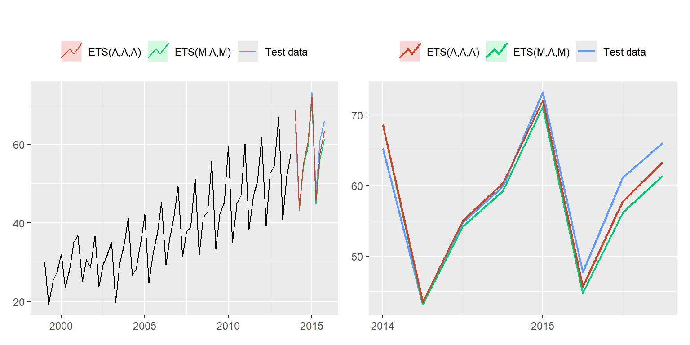
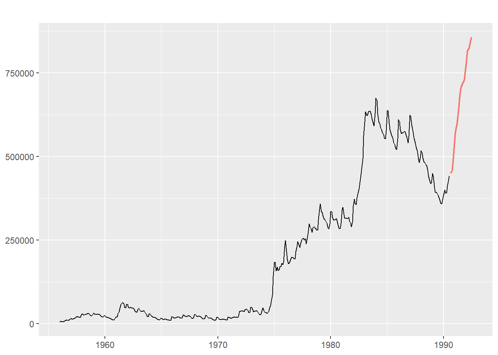
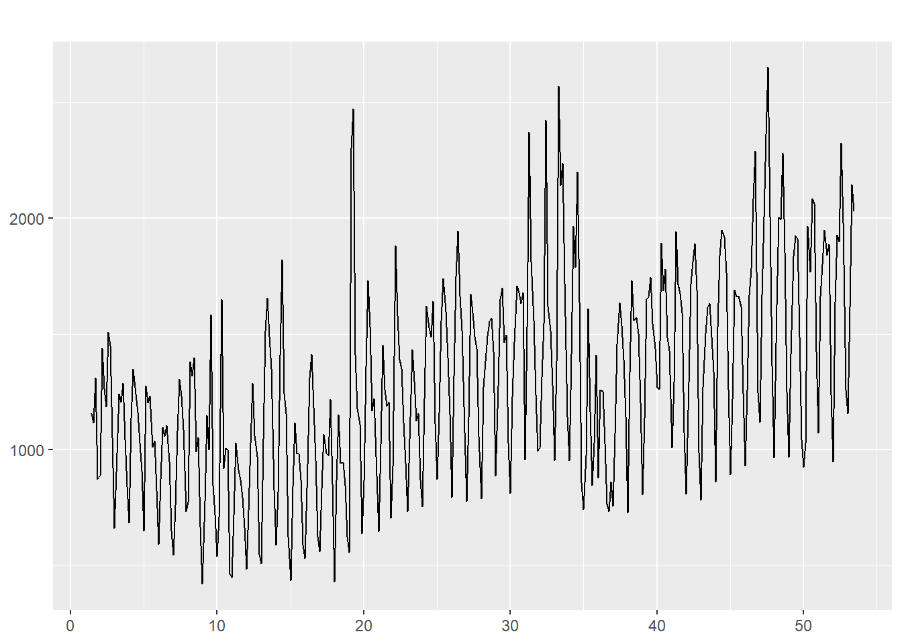

ETS 모형
전통적 지수평활법
- Simple exponential smoothing 예제:
fpp2::oil
fpp2::oil은 1965년부터 2013년까지 Saudi Arabia의 연간 원유 생산량 자료이다. 1996년 이후 자료에 대해 simple exponential smoothing을 적용해 보자.
oil_1996 <- window(oil, start = 1996)1996년 이후 연간 원유 생산량 자료의 시계열 그래프를 Figure 1 에 작성해 보자.
autoplot(oil_1996) +
labs(title = "Annual oil production in Saudi Arabia",
y = NULL)함수 ses()를 사용하여 2014년 ~ 2016년의 원유 생산량을 예측해 보자.
ses(oil_1996, h = 3) %>%
summary()
##
## Forecast method: Simple exponential smoothing
##
## Model Information:
## Simple exponential smoothing
##
## Call:
## ses(y = oil_1996, h = 3)
##
## Smoothing parameters:
## alpha = 0.8339
##
## Initial states:
## l = 446.5868
##
## sigma: 29.8282
##
## AIC AICc BIC
## 178.1430 179.8573 180.8141
##
## Error measures:
## ME RMSE MAE MPE MAPE MASE ACF1
## Training set 6.401975 28.12234 22.2587 1.097574 4.610635 0.9256774 -0.03377748
##
## Forecasts:
## Point Forecast Lo 80 Hi 80 Lo 95 Hi 95
## 2014 542.6806 504.4541 580.9070 484.2183 601.1429
## 2015 542.6806 492.9073 592.4539 466.5589 618.8023
## 2016 542.6806 483.5747 601.7864 452.2860 633.0752Level에 대한 평활상수가 \(\alpha =\) 0.8339으로 추정되었다는 것은 level에 큰 변화가 있는 자료를 의미한다. 이제 예측 결과를 Figure 2 의 그래프로 나타내 보자.
ses(oil_1996, h = 3) %>%
autoplot() +
labs(y = NULL)파란 실선으로 표시된 예측값은 마지막 level 추정값으로써, 모든 h에 대하여 동일하다는 것을 알 수 있다. 예측값을 표시한 실선을 포함하고 있는 짙은 파란 색 영역은 80% 예측 구간을 표시한 것이고, 옅은 파란 색 영역은 95% 예측 구간을 표시한 것이다. 예측 시차가 증가함에 따라 예측 구간의 폭은 계속 넓어지고 있음을 알 수 있다.
- Trend method 예제:
fpp2::ausair
fpp2::ausair는 1970년부터 2016년까지 호주의 연간 항공기 승객 수 자료이다. Holt’s linear trend와 damped Holt’s trend 모형을 이용해서 예측을 실시해 보자.
먼저 시계열 그래프를 Figure 3 에 작성해 보자. 상승 추세가 있는 것을 확인할 수 있다.
autoplot(ausair) +
labs(title = "Air Transport Passengers Australia",
y = NULL)Holt’s linear trend 모형을 함수 holt()를 사용해서 적합시키고, 15 시차에 대한 예측 결과를 Figure 4 에 나타내 보자.
holt(ausair, h = 15) %>%
autoplot()ausair 자료에 대한 Holt’s linear trend method의 예측 결과Damped Holt’s trend 모형에 의한 예측 결과도 그래프로 나타내 보자. 결과는 Figure 5 에서 볼 수 있다.
holt(ausair, h = 15, damped = TRUE) %>%
autoplot()ausair 자료에 대한 damped Holt’s trend method의 예측 결과Figure 4 에서 볼 수 있듯이 Holt’s linear trend method에 의한 예측 결과는 지속적으로 증가하고 있으며, 반면에 damped Holt’s trend method에 의한 예측 결과는 상승 기울기가 점점 줄어들고 있다는 것을 Figure 5 에서 볼 수 있다.
- Holt-Winters’ seasonal method 예제:
fpp2::austourists
austourists는 199년부터 2015년까지 분기별 호주에 입국한 외국인 관광객 수 자료이다. 시계열 그래프는 Figure 6 에서 볼 수 있다.
autoplot(austourists) +
labs(y = NULL, title = "International Tourists to Australia")Holt-Winters’ seasonal 모형을 이용해서 예측을 실시해 보자. 먼저 가법 모형으로 예측을 실시하고 결과를 Figure 7 에 그래프로 나타내 보자.
hw(austourists) %>%
autoplot() + labs(y = NULL)austourists 자료에 대한 Holt-Winters’ additive seasonal method의 예측 결과이번에는 승법 모형으로 예측을 실시하고 결과를 Figure 8 에 그래프로 나타내 보자.
hw(austourists, seasonal = "multiplicative") %>%
autoplot() + labs(y = NULL)austourists 자료에 대한 Holt-Winters’ multiplicative seasonal method의 예측 결과ETS 모형
- 예제 1: 1970년부터 2016년까지 연간 항공기 이용객 수 (
fpp2::ausair)
fpp2::ausair는 1970년부터 2016년까지 호주의 연간 항공기 승객 수 자료이다. 먼저 전체 자료 중 1970년부터 2011년까지의 자료를 training data로 하고, 2012년 이후 자료를 test data로 분리하자.
train_air <- window(ausair, end = 2011)
test_air <- window(ausair, start = 2012)train_air와 test_air의 시계열 그래프는 Figure 9 과 같다. test_air는 빨간 선으로 나타냈다.
autoplot(window(ausair, end = 2012)) +
autolayer(window(ausair, start = 2012), size = .8) +
labs(y = NULL, x = NULL) +
theme(legend.position = "none")ausair 자료의 시계열그래프함수 ets()로 ETS 모형을 적합하고, 그 결과를 확인해 보자.
fit_air <- ets(train_air)
fit_air
## ETS(M,A,N)
##
## Call:
## ets(y = train_air)
##
## Smoothing parameters:
## alpha = 0.9999
## beta = 0.024
##
## Initial states:
## l = 6.5399
## b = 0.7358
##
## sigma: 0.08
##
## AIC AICc BIC
## 206.1828 207.8495 214.8712최적 모형은 ETS(M,A,N)으로 선정되었다. 즉, 추세는 additive이고 오차는 multiplicative이며, 계절요소가 없는 모형이 적합되었다. 평활모수는 \(\alpha=\) 0.9999 , \(\beta=\) 0.024 로 추정되었다. 따라서 시계열자료의 level에는 큰 변화가 있으나, 추세의 기울기에는 큰 변화 없이 일정하다는 것을 알 수 있다.
ETS 모형의 각 요소에 대한 추정 결과를 Figure 10 의 그래프로 나타내 보자. 관측된 자료의 시계열 그래프, 그리고 level의 추정 결과와 추세 기울기의 추정 결과의 시계열 그래프가 함께 작성되어 있다. 그래프 오른쪽 끝에 있는 동일한 높이의 막대가 표시되어 있어서 각 요소의 스케일을 비교할 수 있다.
autoplot(fit_air) 모형의 가정 만족 여부를 함수 checkresiduals()로 확인해 보자. 특별히 문제가 되는 가정 사항은 없는 것으로 보인다.
checkresiduals(fit_air)
##
## Ljung-Box test
##
## data: Residuals from ETS(M,A,N)
## Q* = 3.5236, df = 8, p-value = 0.8973
##
## Model df: 0. Total lags used: 8이제 예측을 실시하고 예측 오차에 대한 평가를 실시해 보자.
fc_air <- forecast(fit_air, h = length(test_air))
accuracy(fc_air, test_air)
## ME RMSE MAE MPE MAPE MASE
## Training set 0.5550369 2.138179 1.31460 0.7893247 5.399428 0.7649321
## Test set 1.7629504 1.888573 1.76295 2.5419343 2.541934 1.0258159
## ACF1 Theil's U
## Training set -0.09163575 NA
## Test set -0.22513230 1.034042예측 결과를 그래프로 나타내 보자. 함수 autoplot()에 함수 forecast()의 결과인 객체 fc_air를 입력하면 training data와 예측 결과를 함께 나타낸다. 옵션 include는 그래프에 포함시킬 training data의 개수를 지정하는 것이다. 따라서 include = 0을 입력하면 예측 부분만을 확대한 효과를 볼 수 있다. 작성 결과는 Figure 11 에서 볼 수 있다.
library(patchwork)
p1 <- autoplot(fc_air) +
autolayer(test_air, color = "red", size = .8) +
labs(y = NULL, x = NULL)
p2 <- autoplot(fc_air, include = 0) +
autolayer(test_air, color = "red", size=.8) +
labs(y = NULL, x = NULL)
p1 + p2fpp2::ausair 자료에 대한 ETS 모형의 예측 결과- 예제 2: 1999년부터 2015년까지 분기별 호주 입국 외국인 관광객 수 (
fpp2::austourists)
austourists는 1999년부터 2015년까지 분기별로 호주에 입국한 외국인 관광객 수 자료이다. 2013년 4분기까지를 training data로 분리하고 2014년 1분기부터를 test data로 분리하자.
train_tour <- window(austourists, end = c(2013, 4))
test_tour <- window(austourists, start = c(2014, 1))두 자료의 시계열 그래프는 Figure 12 과 같다. Test data는 빨간 선으로 표시했다. 상승 추세가 있으며, 명확한 계절요소가 있는 것을 알 수 있다. 또한 계절요소의 진폭이 추세가 상승함에 따라 다소 증가하고 있는 것을 볼 수 있다.
autoplot(window(austourists, end = c(2014,1))) +
autolayer(window(austourists, start = c(2014,1)), size = .8) +
labs(y = NULL) +
theme(legend.position = "none")austourists 자료의 시계열 그래프함수 ets()로 최적 모형을 적합해 보자.
fit_tour <- ets(train_tour)
fit_tour
## ETS(M,A,M)
##
## Call:
## ets(y = train_tour)
##
## Smoothing parameters:
## alpha = 0.4189
## beta = 1e-04
## gamma = 1e-04
##
## Initial states:
## l = 24.2672
## b = 0.5179
## s = 1.0367 0.9578 0.7697 1.2358
##
## sigma: 0.0612
##
## AIC AICc BIC
## 353.3882 356.9882 372.2373ETS(M,A,M) 모형이 선택되었다. 승법 계절 성분이 선택되었다는 것은 계절 요소의 변동 폭이 증가한다는 의미가 된다. 이런 경우에 시계열자료를 로그변환 시킨 후 다시 ETS 모형을 적합시키면 가법 계절 모형이 선택될 것이다. 함수 ets()의 Box_Cox 변환 모수인 옵션 lambda에 0을 입력하면 로그변환된 자료를 대상으로 모형 적합이 이루어진다.
fit_lntour <- ets(train_tour, lambda = 0)
fit_lntour
## ETS(A,A,A)
##
## Call:
## ets(y = train_tour, lambda = 0)
##
## Box-Cox transformation: lambda= 0
##
## Smoothing parameters:
## alpha = 0.337
## beta = 1e-04
## gamma = 0.0137
##
## Initial states:
## l = 3.2161
## b = 0.0122
## s = 0.055 -0.0254 -0.2477 0.2181
##
## sigma: 0.0639
##
## AIC AICc BIC
## -75.06808 -71.46808 -56.21898모형 fit_tour의 가정 만족 여부를 확인해 보자.
checkresiduals(fit_tour)
##
## Ljung-Box test
##
## data: Residuals from ETS(M,A,M)
## Q* = 4.2317, df = 8, p-value = 0.8356
##
## Model df: 0. Total lags used: 8모형 fit_lntour의 가정 만족 여부도 확인해 보자.
checkresiduals(fit_lntour)
##
## Ljung-Box test
##
## data: Residuals from ETS(A,A,A)
## Q* = 5.355, df = 8, p-value = 0.719
##
## Model df: 0. Total lags used: 8두 모형 모두 가정은 만족시키는 것으로 보인다. 이제 두 모형의 예측을 실시하고, 그 결과를 비교해 보자.
fc_tour <- forecast(fit_tour, h = length(test_tour))
fc_lntour <- forecast(fit_lntour, h = length(test_tour))accuracy(fc_tour, test_tour)
## ME RMSE MAE MPE MAPE MASE
## Training set 0.004642325 1.966538 1.474615 -0.4054666 4.196005 0.5206241
## Test set 1.541295202 2.989673 2.414226 2.6022154 3.958845 0.8523613
## ACF1 Theil's U
## Training set -0.0243205 NA
## Test set 0.5001355 0.2077632
accuracy(fc_lntour, test_tour)
## ME RMSE MAE MPE MAPE MASE
## Training set 0.1640202 2.014686 1.562901 0.04389638 4.399828 0.5517943
## Test set 0.6115065 2.128486 1.722829 1.03590923 2.853023 0.6082580
## ACF1 Theil's U
## Training set 0.01619145 NA
## Test set 0.47705974 0.1348746모형 ETS(A,A,A)인 fit_lntour의 test data에 대한 예측 오차가 조금 더 작은 것을 볼 수 있다. 두 모형의 예측 결과를 Figure 13 의 그래프로 비교해 보자. 함수 autolayer()에 PI = FALSE를 입력하면 예측 구간이 생략된다. 이것은 두 모형의 예측 구간이 함께 표시되면 서로 겹쳐지는 현상이 발생하기 때문에 생략한 것이다. 두 모형의 예측에는 큰 차이가 없음을 알 수 있다.
library(patchwork)
p1 <- autoplot(train_tour) +
autolayer(test_tour, series = "Test data") +
autolayer(fc_tour, PI = FALSE, series = "ETS(M,A,M)") +
autolayer(fc_lntour, PI = FALSE, series = "ETS(A,A,A)") +
labs(y = NULL, x = NULL, color = NULL) +
theme(legend.position = "top")
p2 <- autoplot(test_tour, series = "Test data", size = .8) +
autolayer(fc_tour, PI = FALSE, series = "ETS(M,A,M)",
size = .8) +
autolayer(fc_lntour, PI = FALSE, series = "ETS(A,A,A)",
size = .8) +
labs(y = NULL, x = NULL, color = NULL) +
theme(legend.position = "top")
p1 + p2
austourists 자료에 대한 예측 결과 비교모형 ETS(A,A,A)인 fit_lntour의 test data에 대한 예측 결과를 예측 구간과 함께 Figure 14 의 그래프로 나타내 보자.
library(patchwork)
p1 <- autoplot(fc_lntour) +
autolayer(test_tour, color = "red", size = .8) +
labs(x = NULL, y = NULL)
p2 <- autoplot(fc_lntour, include = 0) +
autolayer(test_tour, color = "red", size = .8) +
labs(y = NULL, x = NULL) +
scale_x_continuous(breaks = c(2014.0, 2014.5, 2015.0, 2015.5),
labels = c("2014.Q1", "2014.Q3", "2015.Q1",
"2015.Q3"))
p1 + p2austourists 자료에 대한 예측 결과- 예제 3: 1965년 1월부터 1992년 7월까지 월별 실업 급여 수급 인원 수 (
fma::dole)
fma::dole은 1965년 1월부터 1992년 7월까지 월별로 실업 급여를 받아간 인원 수 자료이다. 마지막 2년 자료를 test data로 분리해 보자.
train_d <- window(dole, end = c(1990, 7))
test_d <- window(dole, start = c(1990, 8))두 자료에 대한 시계열 그래프는 Figure 15 과 같다. Test data는 빨간 선으로 표시했다. 1990년부터 갑작스런 증가세를 보이고 있으며, test data가 대부분 그 시기에 관측된 것이다. 따라서 예측이 상당히 어려운 것으로 보이는 상황이다.
autoplot(train_d) +
autolayer(test_d, show.legend=FALSE, size = .8) +
labs(y = NULL, x = NULL)
dole 자료의 시계열그래프ETS 모형을 적합해 보자.
fit_d <- ets(train_d)
fit_d
## ETS(M,Ad,M)
##
## Call:
## ets(y = train_d)
##
## Smoothing parameters:
## alpha = 0.7057
## beta = 0.1262
## gamma = 0.2942
## phi = 0.8701
##
## Initial states:
## l = 2693.6084
## b = 838.4198
## s = 1.0776 0.9108 0.9286 0.9993 1.0254 1.0275
## 1.0028 0.9466 1.0225 0.9982 1.0038 1.0568
##
## sigma: 0.0965
##
## AIC AICc BIC
## 9930.864 9932.591 10003.373가정 만족 여부를 확인해 보니, 독립성 가정에 문제가 있는 것을 볼 수 있다. 이런 경우, 점 예측값 (point forecast)에는 별다른 문제가 없겠지만, 예측 구간을 신뢰하기 어렵다고 할 수 있다.
checkresiduals(fit_d)
##
## Ljung-Box test
##
## data: Residuals from ETS(M,Ad,M)
## Q* = 270.13, df = 24, p-value < 2.2e-16
##
## Model df: 0. Total lags used: 24예측을 실시하고 평가해 보자.
fc_d <- forecast(fit_d, h = length(test_d))
accuracy(fc_d, test_d)
## ME RMSE MAE MPE MAPE MASE
## Training set 307.438 16094.96 9474.828 0.5940649 6.112239 0.2965093
## Test set 208048.806 234353.38 208048.806 28.7917875 28.791788 6.5107678
## ACF1 Theil's U
## Training set 0.5103798 NA
## Test set 0.8895083 8.715368MASE 값이 지나치게 큰 값이라는 것을 알 수 있다. 예측 결과를 Figure 16 의 그래프로 나타내 보자.
autoplot(fc_d) +
autolayer(test_d, color = "red", size = .8) +
labs(y = NULL, x = NULL) dole 자료에 대한 예측 결과예측이 완벽하게 벗어난 것을 볼 수 있다. 이와 같이 실업자 수가 갑작스럽게 증가하는 상황에서는 과거 자료만을 이용하는 시계열 모형으로는 효율적인 예측이 불가능하다고 하겠다.
Test data에서 발생한 갑작스런 변화의 충격을 완화시키는 방법으로 test data의 기간 축소를 생각할 수 있다. 이렇게 되면, 증가 추세가 training data에도 어느 정도 반영될 수 있을 것이다. 하지만 이 방법은 자료의 추세를 먼저 확인하고 test data의 기간을 변경하는 것이어서 정당한 자료 분리 방법은 아니라고 할 수 있다. 마지막 1년만을 test data로 남겨 놓고 모형 적합을 시도해 보자. 자료분리는 함수 subset()으로도 진행할 수 있다. 옵션 end와 start에 벡터에서 적용되는 방식의 인덱스를 지정할 수 있다.
train_d_1 <- subset(dole, end = length(dole) - 12)
test_d_1 <- subset(dole, start = length(dole) - 11)변경된 training data를 사용해서 적합된 모형으로 마지막 1년 자료에 대한 예측을 실시해 보자. 훨씬 개선된 결과를 볼 수 있다.
fc_d_1 <- train_d_1 %>%
ets() %>%
forecast(h = length(test_d_1))accuracy(fc_d_1, test_d_1)
## ME RMSE MAE MPE MAPE MASE ACF1
## Training set 419.4624 18184.20 10856.63 0.5111136 6.268750 0.3014767 0.5191139
## Test set 5143.1303 46330.29 40948.53 1.0361996 5.319935 1.1370959 0.8678915
## Theil's U
## Training set NA
## Test set 2.792915이제 예측 결과를 그림 Figure 17)의 그래프로 나타내 보자.
library(patchwork)
p1 <- autoplot(fc_d_1) +
autolayer(test_d_1, color = "red", size = .8) +
labs(y = NULL, x = NULL)
p2 <- autoplot(fc_d_1, include = 0) +
autolayer(test_d_1, color = "red", size = .8) +
labs(y = NULL, x = NULL)
p1 + p2dole 자료에 대한 예측 결과- 예제 4: 2014년 4월 30일부터 1년간 Hyndsight 블로그 일일 방문자 수 (
fpp2::hyndsight)
hyndsight는 2014년 4월 30일부터 1년간 Hyndman이 운영하는 블로그에 방문한 일일 방문자 수 자료이다. 자료의 시계열그래프는 Figure 18 에서 볼 수 있다.
autoplot(hyndsight) + labs(x = NULL, y = NULL)
hyndsight 자료의 시계열그래프일일 자료의 경우에 요일의 영향을 받는 자료라면 \(m=7\)의 계절 주기를 갖게 된다. 자료 분리를 위해 2014년 4월 30일이 무슨 요일인지 확인해 보자.
lubridate::wday(as.Date("2014-4-30"), label = TRUE)
## [1] 수
## Levels: 일 < 월 < 화 < 수 < 목 < 금 < 토start(hyndsight); end(hyndsight)
## [1] 1 4
## [1] 53 42014년 4월 30일은 수요일이며, 자료의 시작 시점은 1주 4일 (수)이고 종료 시점은 53주 4일 (수)이 된다. Training data는 1주 4일부터 48주 4일까지로 하고, test data는 48주 5일부터 53주 4일까지 5주간으로 설정하자.
자료 분리는 함수 window()로 보통 진행하지만, 이렇게 자료의 개수로 분리하는 것이 더 편리한 경우에는 함수 subset()으로 진행 할 수 있다. 즉, 마지막 35일 자료를 test data로 분리해 보자.
train_hyn <- subset(hyndsight, end = length(hyndsight)-35)
test_hyn <- subset(hyndsight, start = length(hyndsight)-34)ETS 모형을 적합해 보자. 추세는 없고, 오차와 계절 성분이 모두 가법 형태인 모형이 선택되었다.
fit_hyn <- ets(train_hyn)
fit_hyn
## ETS(A,N,A)
##
## Call:
## ets(y = train_hyn)
##
## Smoothing parameters:
## alpha = 0.4426
## gamma = 1e-04
##
## Initial states:
## l = 1173.6676
## s = 296.9907 -34.3415 -457.6839 -271.7606 63.9589 172.9509
## 229.8854
##
## sigma: 232.0085
##
## AIC AICc BIC
## 5519.446 5520.136 5557.437이제 예측을 진행해 보자.
fc_hyn <- forecast(fit_hyn, h = length(test_hyn))
accuracy(fc_hyn, test_hyn)
## ME RMSE MAE MPE MAPE MASE
## Training set 3.727848 228.8229 164.1102 -2.026679 13.86475 0.7404020
## Test set -73.167844 231.3494 180.9392 -8.044075 13.09378 0.8163279
## ACF1 Theil's U
## Training set 0.1874059 NA
## Test set 0.3712518 0.5878683예측 결과를 Figure 19 의 그래프와 같이 작성해 보자. 빨간 실선은 test data이고, 파란 실선이 예측 결과이다. 예측 구간은 80%와 95% 수준에서 각각 계산되는 것이 디폴트이며, 80% 예측 구간은 짙은 색으로 표시되고, 95% 예측 구간은 옅은 색으로 표시된다.
autoplot(fc_hyn, include = 0) +
autolayer(test_hyn, color = "red", size = .8) +
labs(x = NULL, y = NULL) hynsight 자료에 대한 예측 결과연습문제
- 다음의 자료에 대하여 ETS 모형을 적합하고, 적합 결과를 설명해 보자.
fma::chickenfma::ibmclose
Seoul_temp.xlsx와Suwon_temp.xlsx는 각각 서울시와 수원시의 월별 평균 기온 자료이며, 웹 서버https://raw.githubusercontent.com/yjyjpark/TS-with-R/main/Data/에서 불러올 수 있다. 두 자료에 대하여 각각 ETS 모형을 적합하고 예측을 실시해 보자. Test data는 마지막 2년으로 한다. 적합 및 예측 결과에 대해 설명해 보자.Baek_pm10.xlsx와Seoul_pm10.xlsx, 그리고Suwon_pm10.xlsx는 백령도와 서울, 그리고 수원에서 각각 측정된 미세먼지 농도 자료이며, 웹 서버https://raw.githubusercontent.com/yjyjpark/TS-with-R/main/Data/에서 불러올 수 있다. 세 자료에 대하여 각각 ETS 모형을 적합하고 예측을 실시해 보자. Test data는 마지막 2년으로 한다. 적합 및 예측 결과에 대해 설명해 보자.